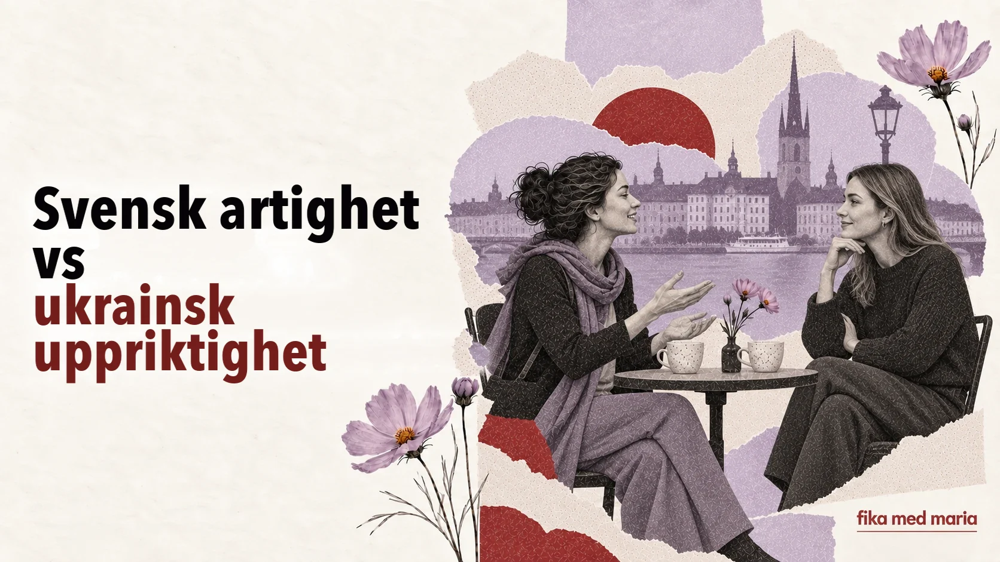

Svensk artighet kan låta som likgiltighet – och ukrainsk uppriktighet som press

En ukrainska frågar en ny bekant: ”Är du gift? Har du barn? Och varför inte?” Hon gör det kanske inte av nyfikenhet, utan för att snabbare skapa närhet och hitta något gemensamt att prata om.
Svenskan svarar kort och för inte samtalet vidare. Ukrainskan tänker: ”Vad kall hon är.” Svenskan tänker: ”Varför ställer någon som jag knappt känner så personliga frågor till mig?”
Ingen av dem ville såra den andra. Det är bara det att två kulturer definierar värme, artighet och respekt på olika sätt.
Distans betyder inte alltid likgiltighet
I många ukrainska sammanhang är omtanke något aktivt: man ger råd, bjuder på mat, hjälper till, frågar ut och försäkrar sig om att personen verkligen inte behöver något.
I Sverige ser omtanke ofta ut som respekt för den andras självbestämmande:
- att inte ställa alltför personliga frågor;
- att inte ge oombedda råd;
- att inte ringa oväntat;
- att låta någon tacka nej utan förklaring;
- att stämma träff i förväg;
- att inte kräva ett svar direkt.
Utifrån sett kan det verka kyligt. Men logiken är en annan: ”Jag tränger mig inte in i ditt liv förrän du själv bjuder in mig.”
En inbjudan är en överenskommelse, inte en ritual
På ukrainska kan ”заходьте якось у гості” (”kom och hälsa på någon gång”) vara ett uttryck för sympati utan någon konkret plan. I Sverige blir en inbjudan oftare verklig när det finns ett datum och en tid.
Vi borde ses någon gång.
Ungefär: det vore trevligt att ses någon gång.
Det är en trevlig fras, men ännu ingen plan.
Vill du komma hem till oss på middag nästa lördag?
Ungefär: middag hemma hos oss, och dagen är redan bestämd.
Det där är en riktig inbjudan.
Därför behöver du inte ta illa upp om ingen genast öppnar kalendern efter Vi borde ta en fika. Men om du vill ses kan du lugnt göra förslaget konkret:
Ja, gärna! Passar nästa torsdag?
Ett råd kan låta som en bedömning
Frasen ”Du måste klä på barnet varmare” kan i ett ukrainskt sammanhang vara helt vanlig omtanke. För någon annan kan det låta som en bedömning av hennes beslut som förälder.
Mjukare svenska formuleringar låter den andra välja själv:
- Vill du höra hur jag brukar göra? – Du väljer själv om du vill ha tipset.
- Jag vet inte om det passar dig, men… – Ett försiktigt sätt att lägga fram ett förslag.
- Säg till om du vill ha hjälp. – Hjälpen finns, men det är du som avgör.
Den sista frasen är viktig: man erbjuder hjälp utan att ta över kontrollen.
Att tacka nej utan långa förklaringar
För många ukrainare känns ett kort ”jag kan inte” ohövligt, så vi förklarar varför. I svensk kommunikation räcker det att säga:
Tack för inbjudan, men jag kan tyvärr inte.
Kort och vänligt – utan någon lång förklaring.
En utförlig redogörelse för alla omständigheter behövs inte alltid. En gräns kan vara artig även utan att man förklarar sig.
Så undviker du att göra kulturella skillnader till stereotyper
Inte alla ukrainare ställer personliga frågor. Inte alla svenskar planerar träffar tre veckor i förväg. Temperament, generation, stad, familj och den enskilda relationen är alltid viktigare än en nationell mall.
Kultur bestämmer inte vem en människa är. Den ger bara en fingervisning om varför samma handling kan betyda olika saker.
I stället för ”varför är svenskar så kalla?” är det mer givande att fråga:
Vilken signal om respekt försöker den här personen skicka – även om jag är van vid att respekt visas på ett annat sätt?
Du vill erbjuda en ny bekant hjälp med flytten utan att sätta press på henne. Vilken fras är bäst?
- Jag kommer i morgon och hjälper dig.
- Säg till om du vill ha hjälp med flytten.
- Du klarar inte det själv.
Visa svaret
Rätt svar: 2.
Målet är inte att ”bli svensk”. Målet är att förstå den andras koder och ha tillräckligt många språkliga verktyg för att kunna vara sig själv. Det är precis det vi tränar hos Fika med Maria: kurser i svenska.
Är det oartigt att ställa personliga frågor till svenskar?
Det beror på hur nära man står varandra. I början av en bekantskap är det bättre att låta den andra själv avgöra hur mycket hon eller han vill berätta om sig själv.
Hur visar man värme på svenska?
Genom att lyssna, komma ihåg det som sagts, hålla överenskommelser, erbjuda konkret hjälp och respektera svaret.